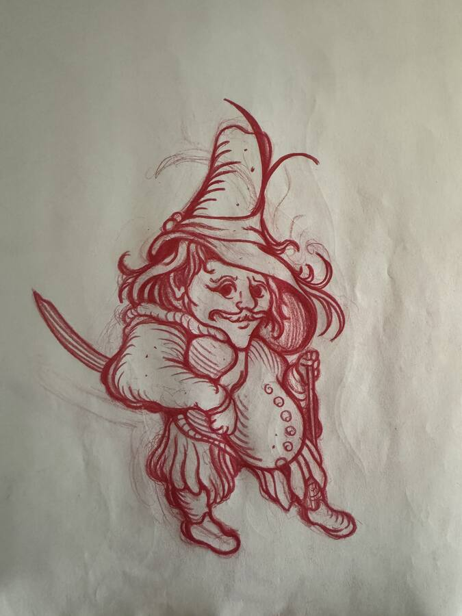
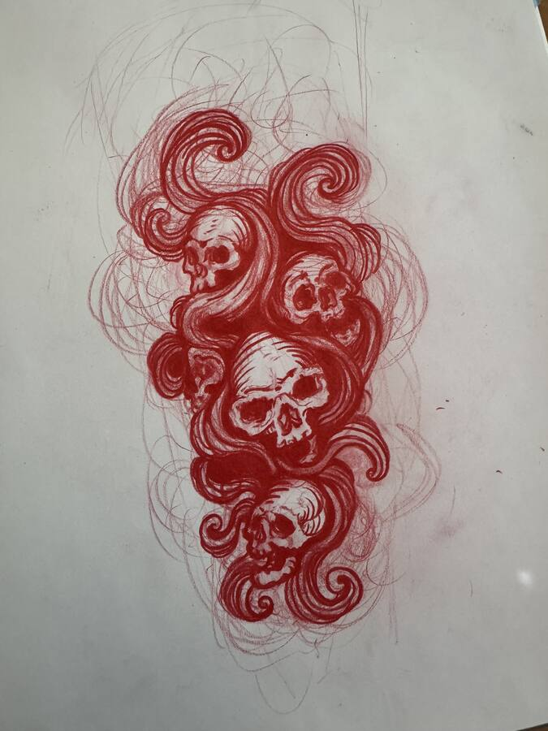
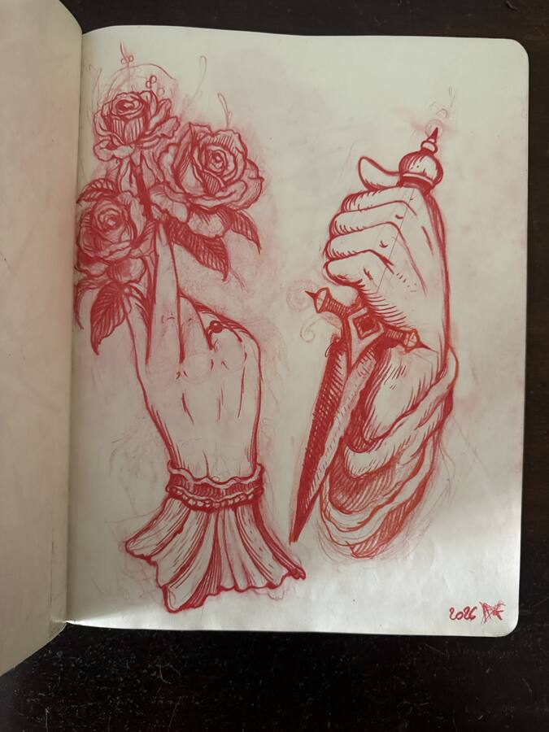
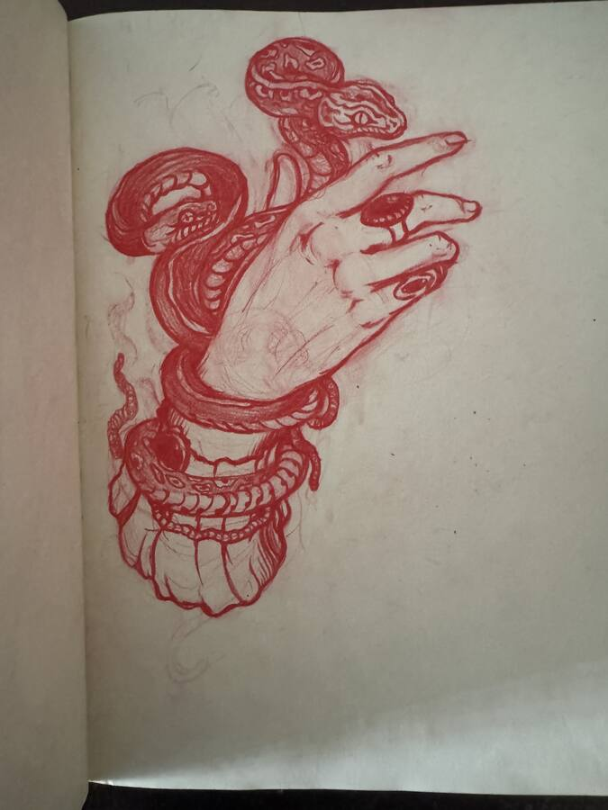
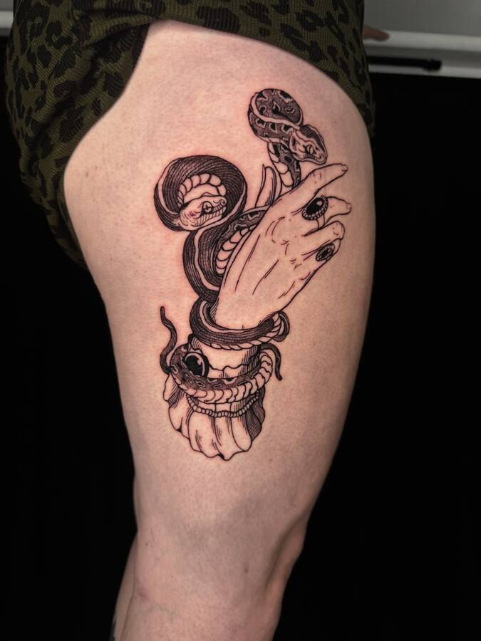
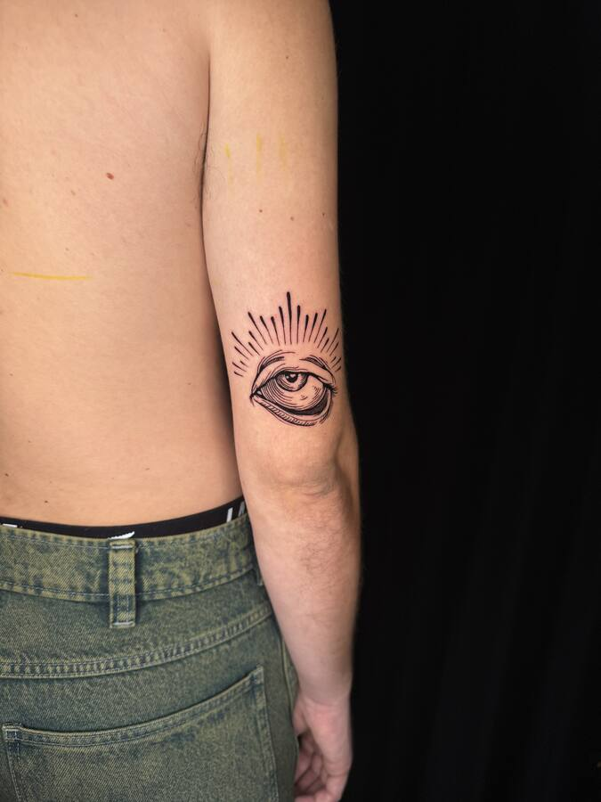
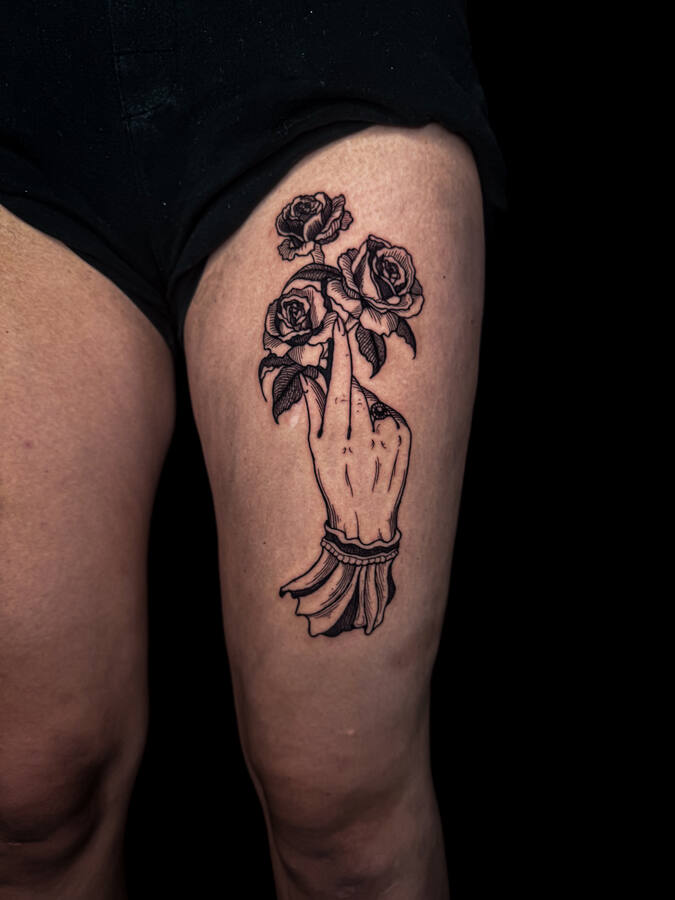

① Le carnet
Au crayon rouge, sans retouche.
Tout commence au carnet, au crayon rouge : une couleur qui ne se prend pas pour du définitif. Les pages sont montrées telles quelles, sans retouche, avec les hésitations. Les croquis deviennent des flashs ou servent de base à un projet personnalisé.
« Le soir, à la bougie. La flamme bouge, le trait suit. »« Je dessine le soir, souvent à la bougie. La flamme bouge, les ombres aussi, et le trait suit. Le jour, je corrige. »
« La main : elle tient, elle offre, elle menace. »« La main est le premier sujet que j'ai dessiné et celui que je n'ai jamais lâché. Elle tient, elle offre, elle menace. Tout dépend de ce qu'on lui met dedans. »
« La dague et les roses. Ce qu'on garde, ce qu'on donne. »« Deux mains qui se répondent : l'une avec la dague, l'autre avec les roses. Ce qu'on garde et ce qu'on donne. Je les ai dessinées pour être portées sur les deux jambes. »

« Des figures qui ont l'air d'avoir mille ans. »« Les bêtes et les figures viennent des marges des manuscrits. J'aime ce qui a l'air d'avoir déjà mille ans, même dessiné hier. »

« Rien de morbide. Des esprits dans la brume. »« Rien de morbide. Ce sont les esprits de ce qui a existé et qui continue. La brume, c'est ce qui passe entre les deux. »
② L'encre
Le trait décidé, à la taille réelle. Deux croquis et leur version encrée.
Quand le croquis tient, il est repris à l'encre noire, sur papier, à la taille réelle du tatouage. C'est le dessin qu'on voit dans le catalogue et celui qui sera décalqué sur la peau. Ci-dessous, deux croquis suivis de leur version encrée.

« Le crayon rouge cherche. »« Le crayon rouge cherche. Il a le droit de se tromper, c'est pour ça qu'il est rouge. »

« L'encre décide. Une seule fois par ligne. »« L'encre décide. Je repasse chaque ligne une seule fois. Si elle est fausse, je recommence la feuille, pas la ligne. »

« Le serpent mue sans changer de forme. »« Le serpent est le seul animal qui se renouvelle en gardant sa forme. Il revient dans presque toutes mes saisons. »

« Les bagues sont venues en dernier. »« Les bagues et le bracelet sont venus à l'encre, pas au crayon. Il faut laisser une place à ce qui arrive en dernier. »

« L'arme, la lumière et ce qui reste. »« La masse, le cierge et le crâne : l'arme, la lumière et ce qui reste. Trois choses qui vont ensemble depuis longtemps. »
③ La séance
Le dessin est décalqué, validé dans le miroir, puis posé. Une à trois heures.
Le dessin est décalqué, positionné, validé ensemble dans le miroir. Puis on commence. Une pièce de la taille d'un flash prend entre une et trois heures selon l'emplacement. Le studio est calme, une personne à la fois, et l'on fait des pauses quand il le faut.
« Je parle peu. Le dessin est déjà décidé. »« En séance je parle peu. Le dessin est déjà décidé, il ne reste qu'à le poser proprement. C'est le moment le plus calme. »
« Les ombres en dernier, par hachures, comme en gravure. »« Les ombres viennent en dernier, par petites hachures, comme en gravure. C'est là que la pièce prend de la profondeur. »
④ Après
Une pièce n'est finie qu'une fois cicatrisée. Retouches comprises dans les six mois.
Une fiche de soins est remise après chaque séance. Pas de soleil, pas de bain ni de piscine pendant trois semaines, une crème adaptée deux fois par jour. Une pièce n'est finie qu'une fois cicatrisée : c'est à ce moment qu'on la photographie pour la section Tatouages. Les retouches sont comprises dans les six mois.

« Cicatrisé, le trait s'assoit dans la peau. »« Cicatrisé, le trait s'assoit un peu dans la peau. C'est là qu'on voit s'il tient. »

« Un dessin qui survit au coude survit partout. »« Le coude bouge tout le temps. Un dessin qui y survit survivra partout. »

« Dans dix ans, un peu plus douces. »« Les roses sont les premières à s'adoucir. Dans dix ans elles seront encore là, un peu plus douces. »